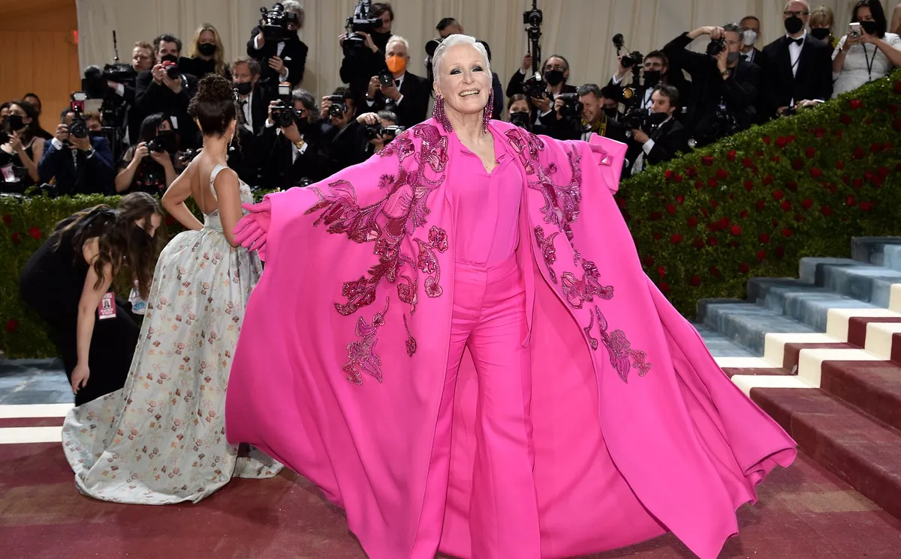

Gala MET 2022: los mejores looks de la alfombra roja más increíble del año
El Metropolitan Museum of Art (MET) de Nueva York ha desplegado su alfombra roja, este año con la "Edad Dorada" como temática para inspirar los looks y los estilismos más espectaculares (y arriesgados) del año. Bienvenidos a la Gala MET 2022, pasen y vean.
Y por fin la Gala MET, la fiesta de la moda más esperada del año -con permiso de la alfombra roja de los Oscar y de los Premios Goya, ha vuelto a extender su alfombra roja con los vestidos más arriesgados, glamurosos, espectaculares y únicos del mundo. Ha llegado el primer lunes de mayo y con él, recuperada la tradicional fecha el Metropolitan Museum of Art de Nueva York, el MET, nos invita a su fiesta de la moda que este año tiene como temática "La Edad Dorada" y es una continuación del 2021, en concreto de la moda en Estados Unidos entre los años 1870 y 1890
La gala, que tiene como objetivo recaudar fondos para el Instituto del Traje que tiene el museo, exige este año un código de vestimenta enmarcado en la exposición "In America: An Anthology of Fashion", que se dividió en dos: en septiembre de 2021. la primera, dedicada a "explorar el vocabulario moderno de la moda estadounidense", y ahora con una muestra que "explora el desarrollo de la moda estadounidense presentando narrativas que están relacionadas con las historias complejas de esos espacios".
Este año, además de Anna Wintour, los copresidentes (o anfitriones) son una de nuestras parejas favoritas, los actores Blake Lively y Ryan Reynolds; la actriz Regina King y el actor y director Lin-Manuel Miranda. Además, Tom Ford y Adam Mosseri son los presidentes honorarios. La lista de celebrities que este año nos han dejado lookazos que ya han pasado a la historia es muy extensa con la actriz Blake Lively a la cabeza y, por primera vez, con las Kardashian (Kylie y Kendall Jenner; y Khloé y Kourtney Kardashian) como invitadas estelares. Tampoco han faltado otras totems de la moda como Sarah Jessica Parker y la gran representación española con Rosalía.